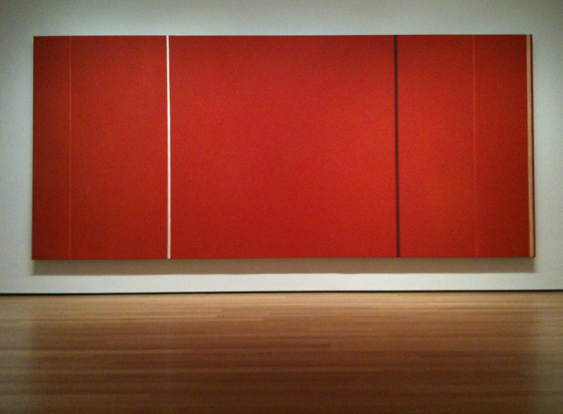
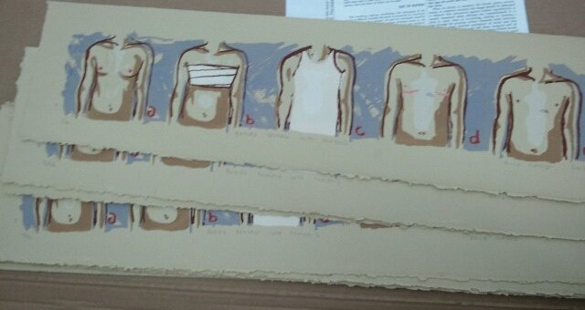

I will include a few essays here as statements, here is the first:
Man, Heroic and SublimePosted to my Patreon on 12/21/2025

Vir Heroicus Sublimis, Barnett Newman, 1950-1
I used to like to go to the MoMA and sit in front of "Vir Heroicus Sublimis": the massive Barnett Newman painting, nearly twenty feet long, so vast and red it casts a deep red reflection on the polished hardwood floor. Visitors would stop and stare while commenting: “I don't get it. This isn't art. It's just a big red box,” and so on. They would not realize they'd been standing in front of it for ten minutes.
While there are a lot of qualities I value in art, one of the greatest, I think, is its ability to act upon the viewer. Vir Heroicus Sublimis, which means “Man, heroic and sublime,” does so in a very bold way, it traps them in its orbit, it makes them feel something, while simultaneously often leaving them still unable to understand what they felt. Those convinced that art is a trick may feel profoundly manipulated and come away still alienated from the thing with which they have just communed.
I love this piece, but this is not what I want my art to do. I want it to act upon the viewer, but the viewer must actively engage first: will they listen to a man who is neither heroic nor sublime, in the grandiose sense? Will they admit that the power of transformation comes from within, and therefore can be contained in something small and quiet, if they are willing to come close? Will they accept the soft intimacy of sex, drugs, and rock-'n'-roll instead of the spectacle?
When I tried to articulate this to other painters a decade ago they didn't get it. They told me: if you want to get your work seen you need to make it bigger, bolder, hype yourself up. That's how I could stop galleries from hanging my paintings on columns or cramming them into corners where viewers would be crowded out of the space they needed to stand in to look by viewers of the work next to it. And forget about wheelchair accessibility in curatorial design: might as well hang the damn painting on the moon. As long as this is treated as a personal slight to an unknown artist (me) and not to the patrons trying to look at the art, no one gives a shit.
And at the time, yes, the art market was built on a foundation of hype. A message had to be simple, loud, and clear to get through. Which meant it had to be a message the viewer had seen before. So what was the point of making anything new?
And to be fair, I also didn't want to hype myself up because I'd come out on the tail end of the era of medical gatekeeping -- well, the kind of gatekeeping conservative institutions are trying to bring back, worse, as though we learned nothing the first time. Okay, we did learn something, which is that it made our lives worse and more dangerous, they've just decided that's good. I was afraid to engage with the concept of image because I didn't want my gender to be seen as part of the performance. My access to my own identity and medical care felt precarious: I'd seen many trans people misgendered or denied care for being too weird.
I took the rejection of hype too far, into assimilationism, at which I was always doomed to fail because I hated that too. The fact is: at times my personality is big and loud and that is just as real and not a marketing strategy as it is when it is small and quiet. Too many of my peers are left unable to market our work because the Instagram model of marketing requires the curation of a form of fixed and ruthlessly ambitious self we find both repugnant and inscrutable. Unless it's just ass pics, then it's cute. I mean, look, you do what you have to do to pay rent, grift is just antithetical to any kind of practice with a philosophical core that isn't built on a foundation of grift.
Regardless: my work is profoundly anti-hype in an age of hype supremacy. I'm not trying to command your attention by force. You came here to look at art: why can't you sustain the attention to look? Well, I know why. Because you expect everything you see to be garbage and you're overwhelmed. I can't very well ask people to stop making garbage, because then they'd stop making art, and the act of making is valuable in itself even if you're making absolute dog shit. But how much art do you see tossed out onto the curb at the end of every month? Do you ask yourself: did someone love this once?
I began painting in response to the way trans bodies were portrayed in mainstream media and fine arts, but I was a student at the time, so my thesis was continually shot down: I was subverting tropes my professors hadn't examined. I suppose it's a huge risk to deal with personal subject matter as a student, but it wasn't merely personal, it was the framework upon which my life was stretched. But it's obvious when writers do it: critique of craft becomes critique of their lives. Your very first creative writing assignment as a freshman shouldn't be about a personal trauma you're still raw over, because you'll wind up on trial over whether you portrayed your own devastation convincingly enough. But after a certain point you're supposed to stop making homework and start making work, and to make work you have to quit trying to be Clark Kent and be Superman: in this case Superman often being not the ability to leap tall buildings but the ability to discuss your PTSD in public. It was never clear when that point was supposed to be, exactly.
Most cis people in the art world would deny that trans representation existed, let alone acknowledge problematic aspects of it. I made work about the precarity of trans housing and this was far enough from what trans art was supposed to be at the time that viewers didn't recognize it as trans. Trans issues were, at the time, seen simultaneously as unworthy of academic study within educational institutions, and as ivory tower gender studies nonsense outside them. Much the same way a seven-year-old autistic child is branded a class traitor in conservative environments for checking out too many library books. Even if they're not actually poor. My class status as simultaneously a private school graduate and not-academic-enough was illegible to institutions.

Bodies Broken Into Symbols, silkscreen, 2010
They wanted blazing signposts: trans people marked by clear signifiers of transness. The ones I had intentionally left out because they didn't fully represent the community. Dual-incision top surgery scars were treated as emblematic of transmasc identity, and I'd just had a form of top surgery that didn't leave visible scars. So I knew symbology would always fail us.
But I never had the opportunity to explain, because every time I opened my mouth I had to do Gender 101 for people who were supposed to be teaching me. People who were in positions of academic authority over me and were primed to think that if we disagreed about gender, and their ideas are feminist, my ideas must be anti-feminist, rather than being rooted in a different framework entirely. I had seen this go badly for others enough that I didn't risk it: tuition was expensive. I was taught to walk on eggshells, to fear being blacklisted from art institutions if I said or did the wrong thing.
My college literally burned down in senior year. And in 2025, to so many of the people who can afford to buy art, I am the wrong thing. I could have been bolder. I can be bolder now, and stand my ground in remaining small and intimate: if you want to hear, come closer.